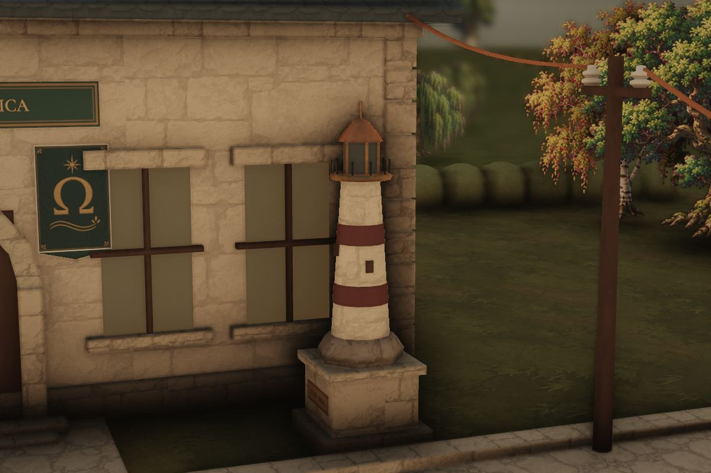

Taller de Electrónica · conectar
Ohmdal · La Luz
Electricidad y electrónica · abierto
El mundo no perdió su luz. Olvidó cómo encenderla.
Un reino que fue apagándose cuando sus habitantes dejaron de preguntarse por qué había luz. Recuperar ese conocimiento transforma sus lugares, sus oficios y sus relaciones.
- Cómo se entra
- El Portal Ω. Se entra cruzando el arco del taller: una pared que deja pasar a quien pregunta.
En el césped, junto al taller, un Faro en miniatura: su lente sigue apagada. Se enciende acá cuando la enciendas allá.